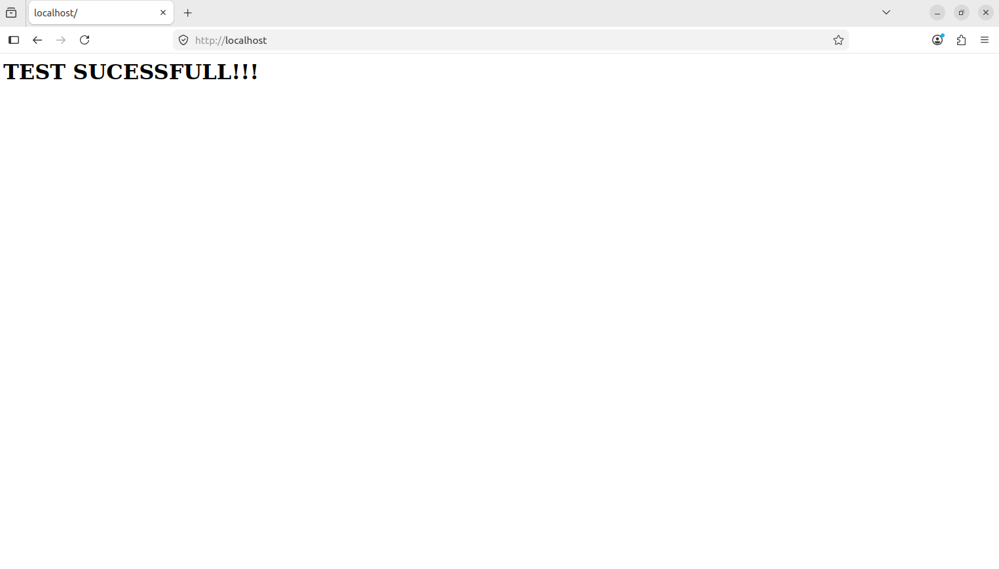

Container mode - HTTPD¶
In document, we experimented with modeling of Apache web server container. We used 2 terminals, first (Terminal n.1) for running the workload and second (Terminal n.2) for its interrogation. All models end trajectories generated during the experiments can be downloaded by clicking on the redirect links.
Apache web server¶
Preparation¶
Only prerequisite for the first part of this experiment is HTTPD (Apache web
server) container. It can be created using Docker with following docker file and
index.html file in the ./public-html/ directory. Having a graphical user
interface for the Ubuntu Linux is also recommended for testing, but this can be
substituted by SSH tunneling or simply using curl command. For the
second part the tsem_integrity.ko kernel module compiled from the Quixote
source repository is required.
FROM httpd:2.4
COPY ./public-html/ /usr/local/apache2/htdocs/
<h1>TEST SUCESSFULL!!!</h1>
If launched without modeling, using bare runc, it had following output on
localhost:80 of our virtual machine.

Modeling¶
We started by launching the container, exiting the container and executing the script.
# quixote -w httpd -o httpd.model
AH00557: httpd: apr_sockaddr_info_get() failed for umoci-default
AH00558: httpd: Could not reliably determine the server's fully qualified domain name, using 127.0.0.1. Set the 'ServerName' directive globally to suppress this message
AH00557: httpd: apr_sockaddr_info_get() failed for umoci-default
AH00558: httpd: Could not reliably determine the server's fully qualified domain name, using 127.0.0.1. Set the 'ServerName' directive globally to suppress this message
[Sun May 31 22:53:31.731476 2026] [mpm_event:notice] [pid 1:tid 1] AH00489: Apache/2.4.63 (Unix) configured -- resuming normal operations
[Sun May 31 22:53:31.731651 2026] [core:notice] [pid 1:tid 1] AH00094: Command line: 'httpd -D FOREGROUND'
127.0.0.1 - - [31/May/2026:22:54:06 +0000] "GET / HTTP/1.1" 200 28
127.0.0.1 - - [31/May/2026:22:54:06 +0000] "GET /favicon.ico HTTP/1.1" 404 196
^C[Sun May 31 22:54:29.232220 2026] [mpm_event:notice] [pid 1:tid 1] AH00491: caught SIGTERM, shutting down
^C
Wrote security model to: httpd.model
With the model created we tried to run it in enforced mode.
# quixote -w httpd -m httpd.model -e
time="2026-05-31T23:00:10Z" level=warning msg="unable to destroy container: unable to remove container state dir: unlinkat /run/runc/httpd/exec.fifo: operation not permitted"
time="2026-05-31T23:00:10Z" level=error msg="runc run failed: unable to create new parent process: namespace NEWNET is not supported"
The container didn’t launch properly, so we relaunched it in non-enforcing mode.
# quixote -w httpd -m httpd.model
AH00557: httpd: apr_sockaddr_info_get() failed for umoci-default
AH00558: httpd: Could not reliably determine the server's fully qualified domain name, using 127.0.0.1. Set the 'ServerName' directive globally to suppress this message
AH00557: httpd: apr_sockaddr_info_get() failed for umoci-default
AH00558: httpd: Could not reliably determine the server's fully qualified domain name, using 127.0.0.1. Set the 'ServerName' directive globally to suppress this message
[Sun May 31 23:40:01.387448 2026] [mpm_event:notice] [pid 1:tid 1] AH00489: Apache/2.4.63 (Unix) configured -- resuming normal operations
[Sun May 31 23:40:01.387612 2026] [core:notice] [pid 1:tid 1] AH00094: Command line: 'httpd -D FOREGROUND'
127.0.0.1 - - [31/May/2026:23:40:41 +0000] "GET / HTTP/1.1" 200 28
127.0.0.1 - - [31/May/2026:23:40:41 +0000] "GET /favicon.ico HTTP/1.1" 404 196
We captured the forensics and backpropagated them.
# quixote-console -w httpd -F > httpd_1.json
# quixote-console -w httpd -M -u > httpd.model.up
We relaunched the container with the updated model, enforced.
# quixote -w httpd -m httpd.model.up -e
time="2026-05-31T23:56:43Z" level=error msg="runc run failed: unable to get cgroup PIDs: lstat /sys/fs/cgroup/user.slice/user-1000.slice/httpd: operation not permitted"
#
We tried to relaunch the container in non-enforcing mode again.
# quixote -w httpd -m httpd.model
AH00557: httpd: apr_sockaddr_info_get() failed for umoci-default
AH00558: httpd: Could not reliably determine the server's fully qualified domain name, using 127.0.0.1. Set the 'ServerName' directive globally to suppress this message
AH00557: httpd: apr_sockaddr_info_get() failed for umoci-default
AH00558: httpd: Could not reliably determine the server's fully qualified domain name, using 127.0.0.1. Set the 'ServerName' directive globally to suppress this message
[Sun May 31 23:57:02.589699 2026] [mpm_event:notice] [pid 1:tid 1] AH00489: Apache/2.4.63 (Unix) configured -- resuming normal operations
[Sun May 31 23:57:02.589838 2026] [core:notice] [pid 1:tid 1] AH00094: Command line: 'httpd -D FOREGROUND'
127.0.0.1 - - [31/May/2026:23:58:54 +0000] "GET / HTTP/1.1" 200 28
127.0.0.1 - - [31/May/2026:23:58:54 +0000] "GET /favicon.ico HTTP/1.1" 404 196
We also inspected the violations the workload generated.
# quixote-console -w httpd -F > saved.file
Since the workload generated many violations again. We decided to change approach and use the loadable module provided by the Quixote source repository.
# quixote -w httpd -M tsem_integrity -o ihttpd.mod
AH00557: httpd: apr_sockaddr_info_get() failed for umoci-default
AH00558: httpd: Could not reliably determine the server's fully qualified domain name, using 127.0.0.1. Set the 'ServerName' directive globally to suppress this message
AH00557: httpd: apr_sockaddr_info_get() failed for umoci-default
AH00558: httpd: Could not reliably determine the server's fully qualified domain name, using 127.0.0.1. Set the 'ServerName' directive globally to suppress this message
[Mon Jun 01 03:02:30.615804 2026] [mpm_event:notice] [pid 1:tid 1] AH00489: Apache/2.4.63 (Unix) configured -- resuming normal operations
[Mon Jun 01 03:02:30.618617 2026] [core:notice] [pid 1:tid 1] AH00094: Command line: 'httpd -D FOREGROUND'
[Mon Jun 01 03:02:31.416634 2026] [mpm_event:notice] [pid 1:tid 1] AH00492: caught SIGWINCH, shutting down gracefully
Wrote security model to: ihttpd.mod
This generated way smaller model file, since only file integrity related system calls are modeled.
We relaunched the container in enforced mode.
# quixote -w httpd -M tsem_integrity -m ihttpd.mod -e
AH00557: httpd: apr_sockaddr_info_get() failed for umoci-default
AH00558: httpd: Could not reliably determine the server's fully qualified domain name, using 127.0.0.1. Set the 'ServerName' directive globally to suppress this message
AH00557: httpd: apr_sockaddr_info_get() failed for umoci-default
AH00558: httpd: Could not reliably determine the server's fully qualified domain name, using 127.0.0.1. Set the 'ServerName' directive globally to suppress this message
[Mon Jun 01 03:05:52.762232 2026] [mpm_event:notice] [pid 1:tid 1] AH00489: Apache/2.4.63 (Unix) configured -- resuming normal operations
[Mon Jun 01 03:05:52.762399 2026] [core:notice] [pid 1:tid 1] AH00094: Command line: 'httpd -D FOREGROUND'
127.0.0.1 - - [01/Jun/2026:03:06:31 +0000] "GET / HTTP/1.1" 200 28
127.0.0.1 - - [01/Jun/2026:03:06:31 +0000] "GET /favicon.ico HTTP/1.1" 404 196
127.0.0.1 - - [01/Jun/2026:03:06:42 +0000] "GET / HTTP/1.1" 304 -
127.0.0.1 - - [01/Jun/2026:03:06:43 +0000] "GET / HTTP/1.1" 304 -
This time the workload launched successfully and we were able to access the demo html site (yes, even after browser cache clean-up).
To simulate misuse, we decided to replace the httpd-foreground script, the container uses at startup
#!/usr/bin/env bash
echo "HACKED!!!"
sleep 1337
We relaunched the container in enforced mode.
# quixote -w httpd -M tsem_integrity -m ihttpd.mod -e
exec /usr/local/bin/httpd-foreground: operation not permitted
The container didn’t start — the httpd-foreground startup program was denied permission.
We tried to backpropagate this malicious file into the model.
# quixote-console -w httpd -F > saved.file
# quixote-console -w httpd -M -u > ihttpd.mod.up
Download forensics
Download model
We relaunched the container with the malicious httpd-foreground file modeled into its model.
# # quixote -w httpd -M tsem_integrity -m ihttpd.mod.up -e
HACKED!!!
It ran successfully with no violations.
This experiment demonstrated that modeling more complex workload such as web server is not a trivial task and would likely require long time of event collection before working reliably. The integrity model on the, other hand, was could be modeled very simply and even the backpropagation could be carried out very easily.